Onde você vai encontrar de tudo
sobre Fórmula 1!
A temporada de 2025 da Fórmula 1 promete ser emocionante, com um
grid repleto de talentos
e a chegada de vários pilotos novatos que trazem uma nova energia ao
campeonato. Entre os estreantes
deste ano, destacam-se:
- Gabriel Bortoleto: O brasileiro de 20 anos, campeão da Fórmula 2 em 2024, fará sua estreia na Sauber ao lado do experiente Nico Hülkenberg.
- Andrea Kimi Antonelli: Com apenas 18 anos, o italiano assume uma vaga na Mercedes, substituindo o heptacampeão Lewis Hamilton, que se transferiu para a Ferrari.
- Jack Doohan: Filho do lendário piloto de motociclismo Mick Doohan, o australiano de 22 anos estreia na Alpine, formando dupla com Pierre Gasly.
- Oliver Bearman: O britânico de 19 anos foi promovido à posição de titular na Haas após destacar-se na Fórmula 2, substituindo Kevin Magnussen e tendo Esteban Ocon como companheiro de equipe.
- Isack Hadjar: Vice-campeão da Fórmula 2 em 2024, o francês de 20 anos estreia na Racing Bulls, equipe anteriormente conhecida como RB.
- Liam Lawson: O neozelandês de 23 anos assume uma posição na Red Bull Racing ao lado do tetracampeão Max Verstappen, após estrear na Fórmula 1 em 2023 e disputar 11 GPs.

Notícias atualizadas
diariamente
Aqui, você encontrará as últimas novidades do mundo da Fórmula 1, com notícias atualizadas diariamente para que nenhum detalhe passe despercebido. Fique por dentro de tudo o que acontece dentro e fora das pistas! 🚀🏎️
Uma das notícias que mais abalou o mundo do automobilismo foi a confirmação da ida de Lewis Hamilton para a Ferrari em 2025. Após mais de uma década na Mercedes, onde conquistou títulos e quebrou recordes, o heptacampeão mundial decidiu enfrentar um novo desafio na escuderia italiana. A mudança pegou muitos fãs de surpresa e promete trazer uma nova dinâmica para a disputa do campeonato, especialmente com a rivalidade entre Hamilton e Charles Leclerc, que será seu companheiro de equipe. Com essa reviravolta, a temporada de 2025 já se desenha como uma das mais emocionantes da Fórmula 1 nos últimos anos.
Ferrari
A Scuderia Ferrari é uma das equipes mais icônicas e vitoriosas da história da Fórmula 1. Com uma tradição de mais de 70 anos, a Ferrari busca constantemente a perfeição e a inovação. Em 2025, a equipe contará com o heptacampeão mundial Lewis Hamilton, que se junta a Charles Leclerc. A Ferrari está pronta para desafiar a Red Bull pela supremacia do campeonato.
McLaren
A McLaren é uma das equipes mais prestigiadas da Fórmula 1, com um legado de sucesso, incluindo vitórias em campeonatos mundiais. Com uma abordagem focada em tecnologia e desempenho, a McLaren está em constante evolução. Lando Norris e Oscar Piastri serão os pilotos da equipe em 2025, com grandes expectativas para a temporada.
Red Bull Racing
A Red Bull Racing tem sido dominante nos últimos anos, com Max Verstappen conquistando títulos consecutivos e estabelecendo um novo padrão de excelência. A equipe é conhecida por sua abordagem estratégica e inovação em tecnologia, sendo uma das favoritas para dominar a temporada de 2025. Ao lado de Verstappen, a equipe tem Liam Lawson, prometendo fortes resultados.
Mercedes
A Mercedes é uma das equipes mais vencedoras da era moderna da Fórmula 1. Com a saída de Lewis Hamilton para a Ferrari, a equipe agora conta com o jovem talento Andrea Kimi Antonelli e o experiente George Russell para seguir em busca de mais títulos. A Mercedes continua a ser uma forte candidata ao campeonato.
Aston Martin
A Aston Martin tem se consolidado como uma equipe competitiva e em ascensão na Fórmula 1. Com a presença de Fernando Alonso, a equipe vem mostrando força nas últimas temporadas. Para 2025, Lance Stroll continua ao lado de Alonso, e a Aston Martin espera desafiar as equipes mais fortes do grid.
Alpine
A Alpine, anteriormente conhecida como Renault, é uma equipe que busca retorno aos dias de glória, com uma forte presença de inovação e desenvolvimento. Em 2025, a equipe contará com Pierre Gasly e Esteban Ocon, dois pilotos talentosos que podem levar a Alpine a novos altos na Fórmula 1.
Racing Bulls
A Racing Bulls, anteriormente chamada de RB, é uma equipe com um nome que remete ao sucesso e à competitividade. Isack Hadjar, após sua destacada temporada na Fórmula 2, faz sua estreia com a equipe, prometendo ser uma força a ser reconhecida. A Racing Bulls busca seguir os passos de sucesso da sua antecessora, a Red Bull.
Williams
A Williams é uma das equipes mais históricas da Fórmula 1, embora tenha passado por dificuldades nos últimos anos. Com um esforço contínuo para melhorar o desempenho, a equipe conta com Alexander Albon e Logan Sargeant para representar suas cores. Williams visa dar um passo importante em 2025, buscando voltar ao topo do grid.
Haas
A Haas, uma das equipes mais jovens da Fórmula 1, tem mostrado grande determinação para competir com equipes mais tradicionais. Com pilotos experientes como Kevin Magnussen e o promissor rookie Oliver Bearman, a Haas busca consistentemente melhorar sua performance e fazer seu nome na F1.
Sauber
A Sauber, que se tornou a Alfa Romeo nos últimos anos, volta a ser uma equipe de grande foco em 2025. Contando com o talento de Gabriel Bortoleto, o brasileiro campeão da Fórmula 2, ao lado de Nico Hülkenberg, a equipe promete ser uma surpresa nesta temporada, com uma combinação de experiência e juventude.
Como está o
GRID?
 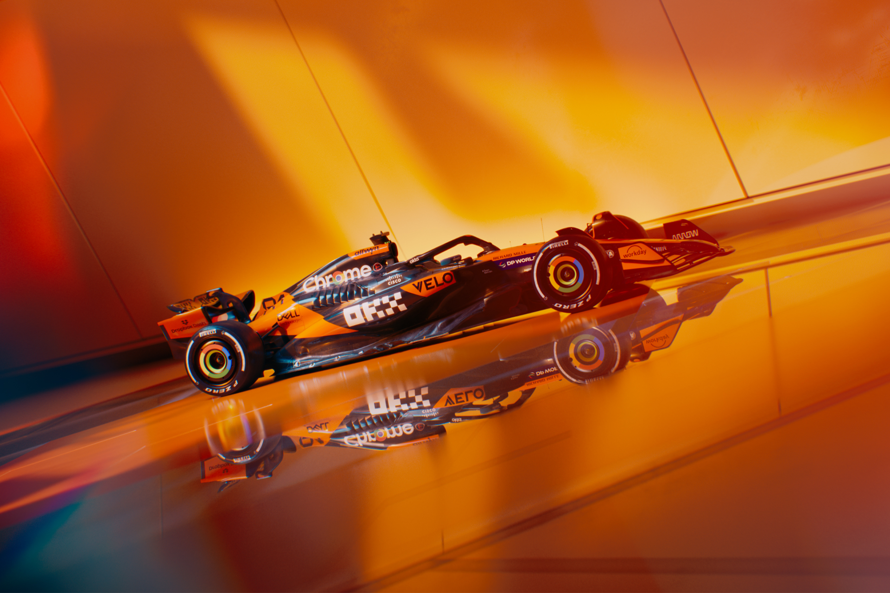
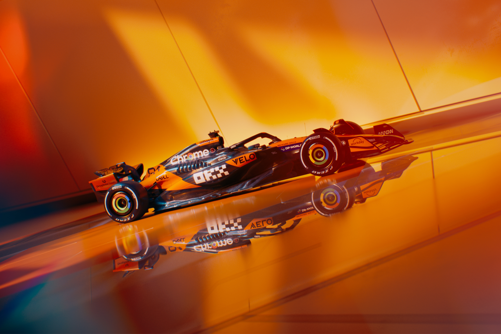


 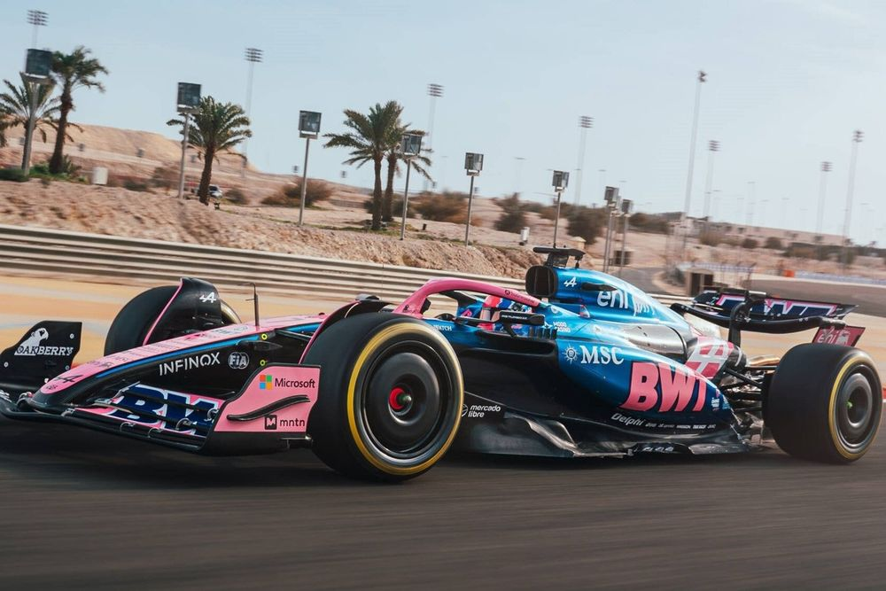
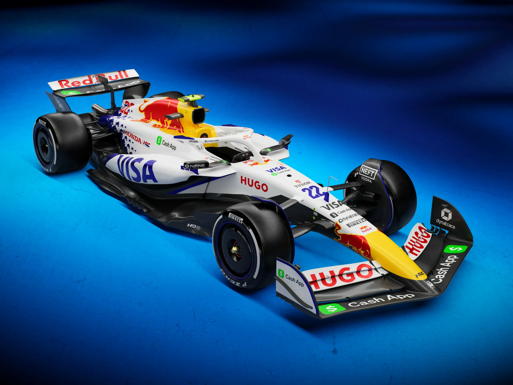
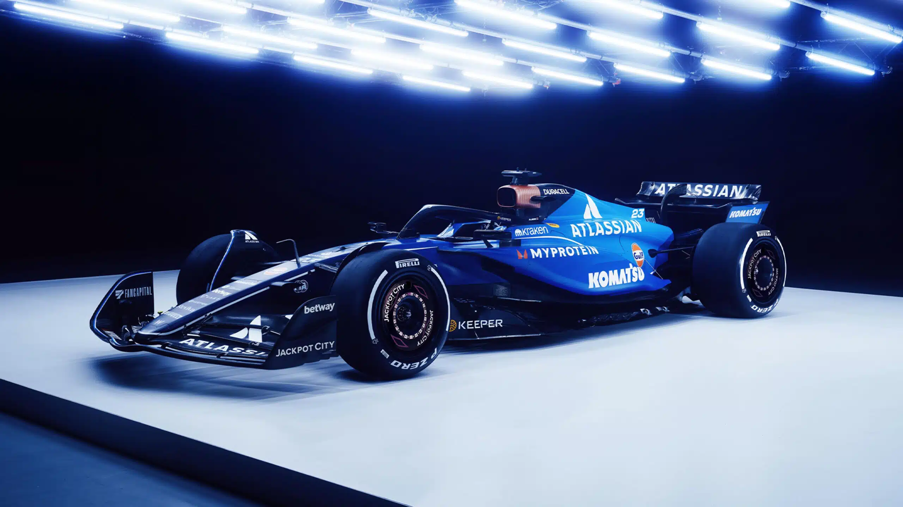
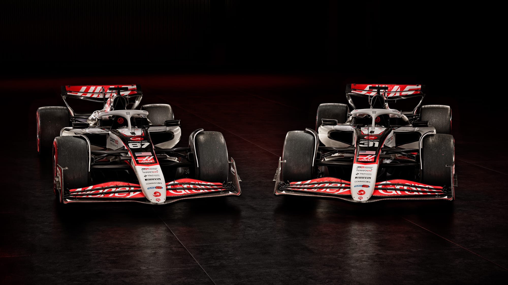
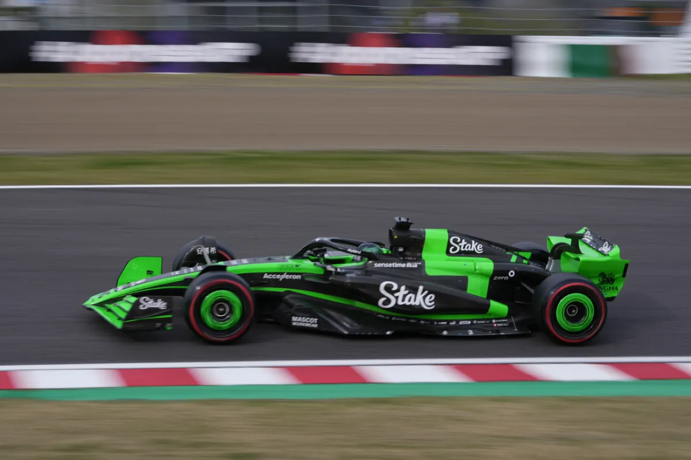
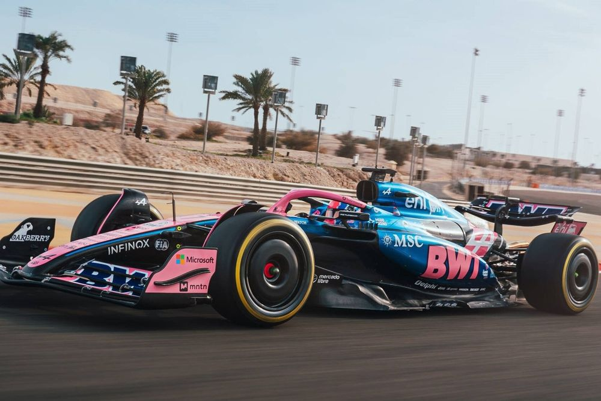
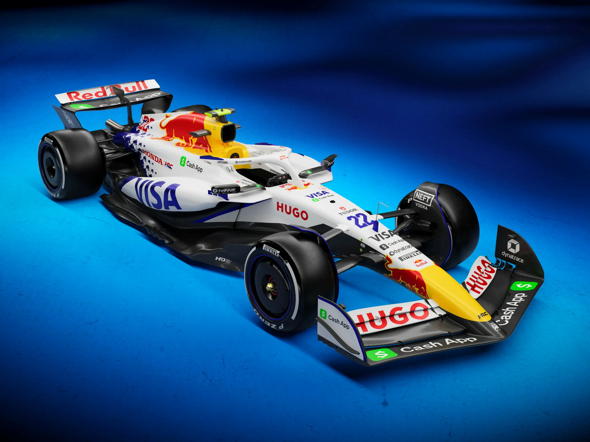
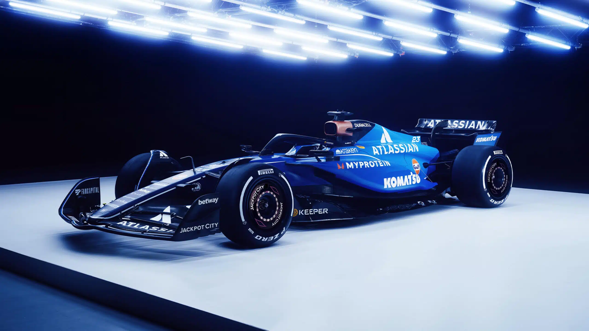
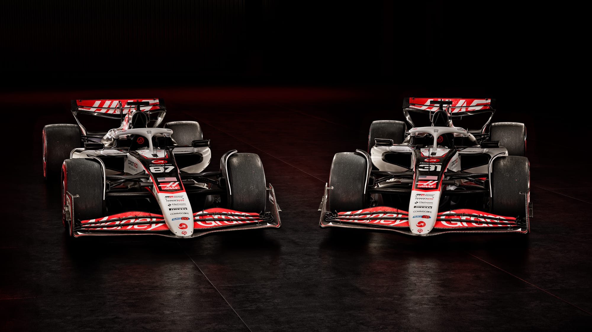
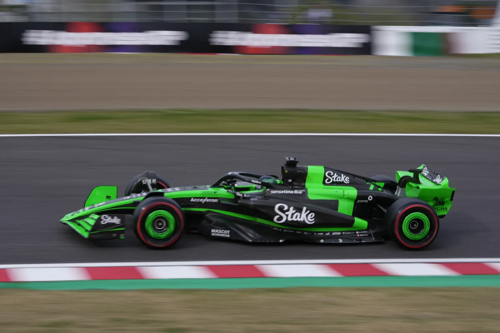